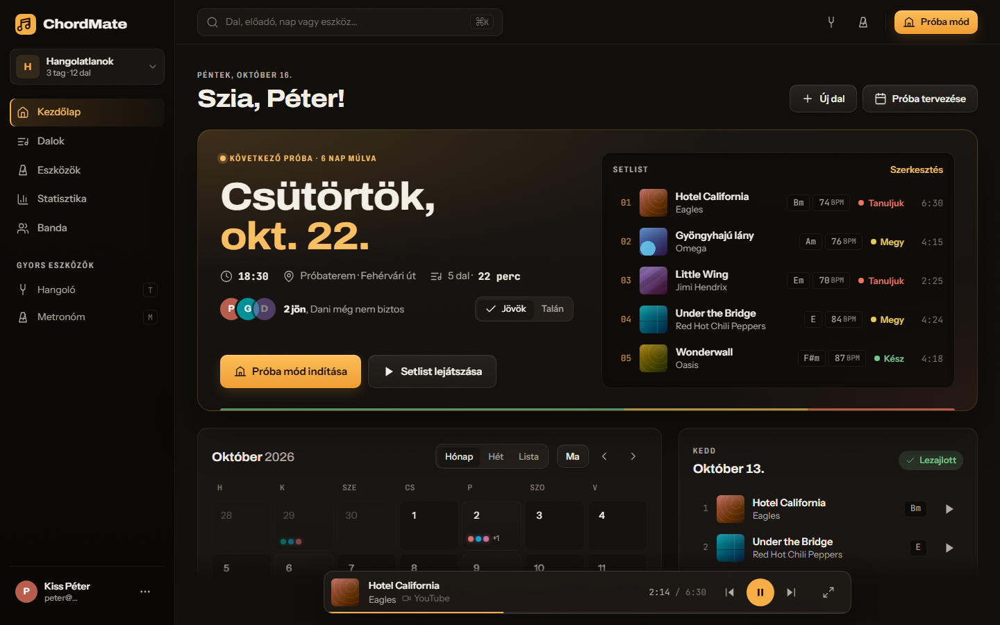
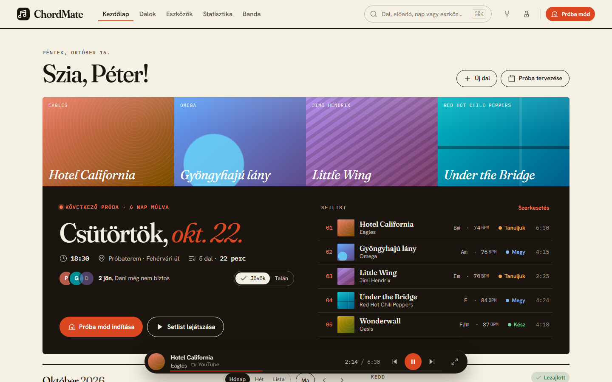
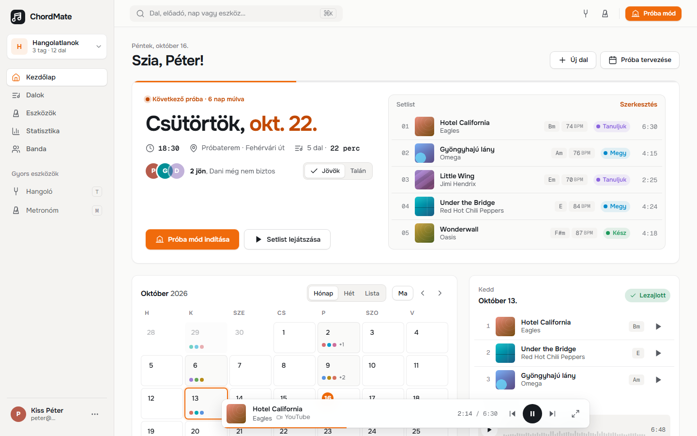
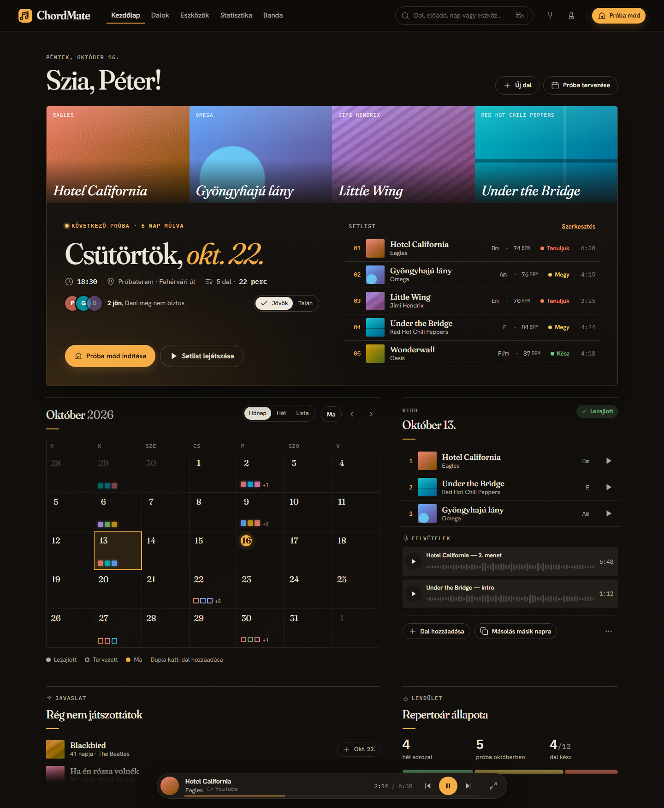

Mind a négy mockup ugyanazt az új információs architektúrát és UX-et mutatja (Következő próba hero, új naptárcella, mini-player, Song Hub, Próba mód). Csak a vizuális nyelv különbözik, így tisztán a stílust tudod összehasonlítani. A felső sávban válthatsz irányt, képernyőt és desktop/mobil nézetet. A mockupok interaktívak: naptárnap-választás, státuszszűrő, rács/lista nézet, lejátszás, Próba módban metronóm, léptetés és auto-görgetés.




A Liner Notes szerkezete és tipográfiája (Fraunces serif, dőlt dátumok, hajszálvonalas rovatok, masthead fejléc, borítók tipográfiával) a Studio meleg szénfekete alapján, amber lámpafénnyel, LED-jelölésekkel és filmszemcsével. Egyszerre szerkesztőségi és esti próbatermi hangulatú.